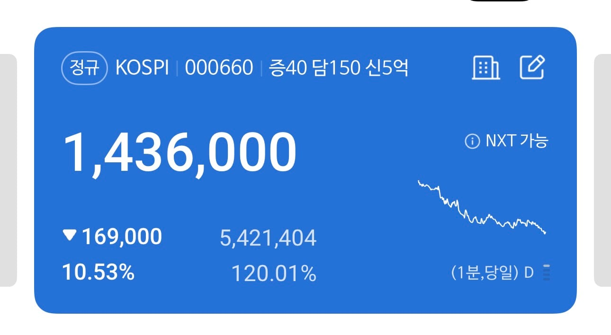

-10.53% 이다

-10.53% 이다
설명 할 시간없어
빨리 타
일단 타
물타라고?
아니 불에 타라고
주식 시장에 피가 낭자하고 공포가 만연하다
두려워요
이것은 거짓이다
-10.78 이다
지금이니 어서 들어오도록
제발..

이게 진짜일리 없어~♫♬
비트코인 또 1승~
주식시장에 피가 낭자하고 공포가 만연하다....
진짜는 이제 시작이라는거지. 코스피 다시 3000 찍으러 갈듯.
미국 금리 4%까지 올렸고 트럼프가 갑자기 미쳐서 이란전쟁 끝내고 원유시장 정상화 되서 가격 급락하지 않는 이상 주식시장 이탈은 안끝날듯. 더군다나 AI쪽은 거품이라는게 점점 사실화 되고 있어서 삼닉이 50% 먹고있는 코스피는 지옥갈수 밖에 없음.
AI 거품설이 사실화되고 있다는 근거는? 미국 금리 4프로와 이란전쟁으로 인해 코스피가 3천행이라는 근거는?? 대체…;;
AI로 벌어들이는 수익이랑 지출 괴리로 우려 나오던건 하루이틀도 아니고 AI기업들 영업이익 부풀리기로 꽤 크게 기사도 났었지.
AI기술이 거품이라는게 아니라 AI 수익성이 거품이라는거임.
그리고 금리상승이랑 주식 떨어지는건 직관적인 연관관계잖나. 뭐 더 설명할 필요가 있나. 금리 상승 시킨것도 기름값 때문에 물가상승이 이어지니까 금리 올려서 잡으려고 하는거니 이란전쟁 끝나야지 해결되는거고.
코스피 지랄나는건 AI거품에 이어서 중국새끼들 램 생산 기사 때문에 더 지랄나는것도 있고.
지금은 우리가 이 서비스의 선두주자가 되겠다고 하면서 막 무료로 뿌리고 있는데
어느정도 궤도에 오르면 거진 유료화 할거임. 그리고 현재 OTT처럼 영화 불법다운로드하느니 OTT에서 보겠다 하는것처럼 AI 월간결제도 익숙해지겠지. 근데 그게 언제가 될진 모르겠다.
ㅇㅇ 그 시기가 언제인가도 문제고 그 중간 못버틴 AI기업들 도산이라도 나면 지옥 시작이라는거임.
지옥에서온 숏충 ㄷㄷ
국장에선 숏을 쳐도 모가지 따인다는거임
매출이 있는데 왜 거품임..?
매출이 있어도 장기적으로 AI개발에 따른 지출을 따라잡을 수 있냐는건 하루이틀 된 논쟁이 아니잖나.
거기에 매출 부풀리기 하다가 걸린 AI 기업들도 있어서 더욱 더 그렇고.
어허 선동하지마라 지금 다시 올라서 -10.40%이다
10프로 빠졌는데 내일은 오르겠지?
다시 마오
가주아!!
코스피는 과학인가... 결국 3천딱으로 돌아가는구나

하닉 적정주가 70 삼전 13이래
ㄴㄴ720
피가 낭자하고 어쩌구

하나 더살까

이 글은 선동이다
-9.97이다
흑흑
다시 확인하니 -10 태~원~
왜 또 지랄임
바겐세일이네 지금사?
2.1주석
마십쩌둥~
분할로 사라 08년 20년 같이 전세계가 한순간에 신용경색 맞는 거 아닌 이상 앵간하면 반등나온다 30, 20, 50 정도로 3분할하면 될 듯

아직 사기에는 곡소리가 부족함. 조금만더 곡소리나도록 기다렸다 들어가야지
물타!
지금이니?